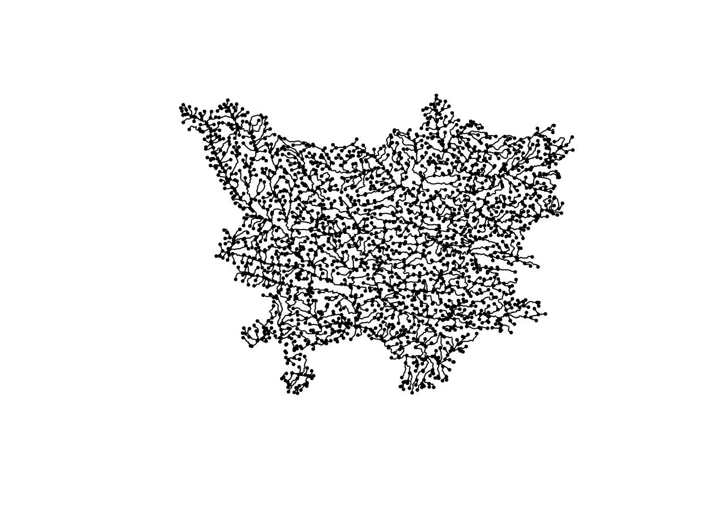
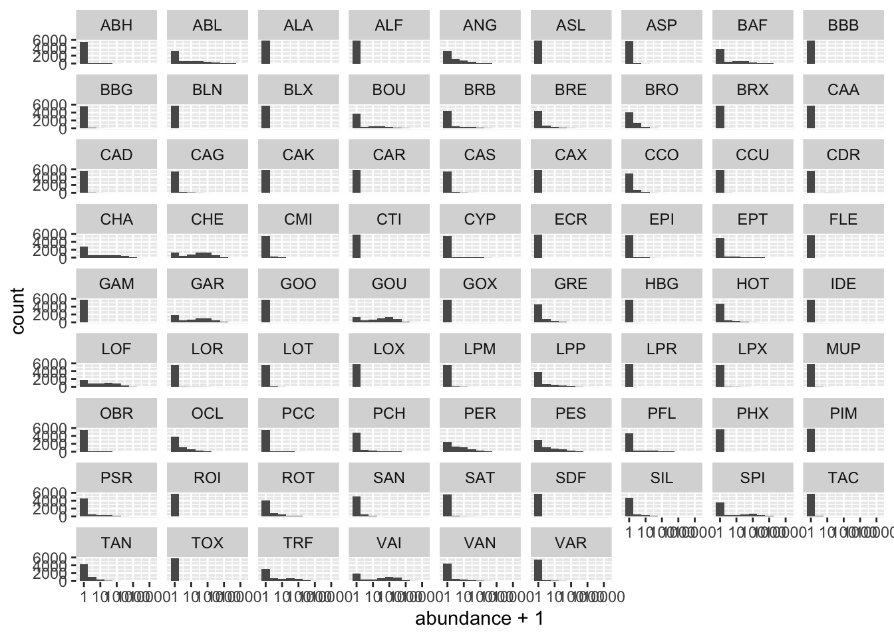
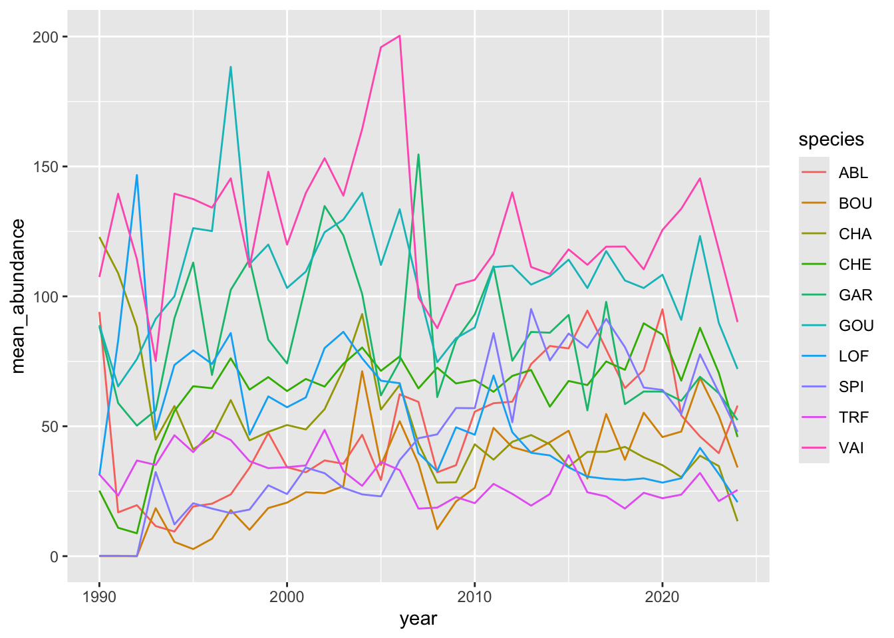
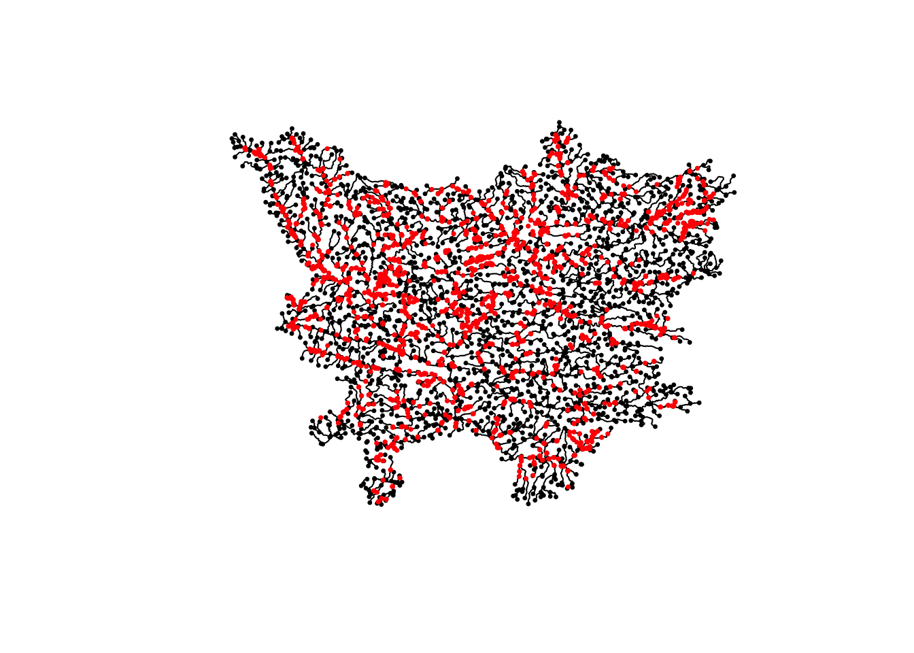
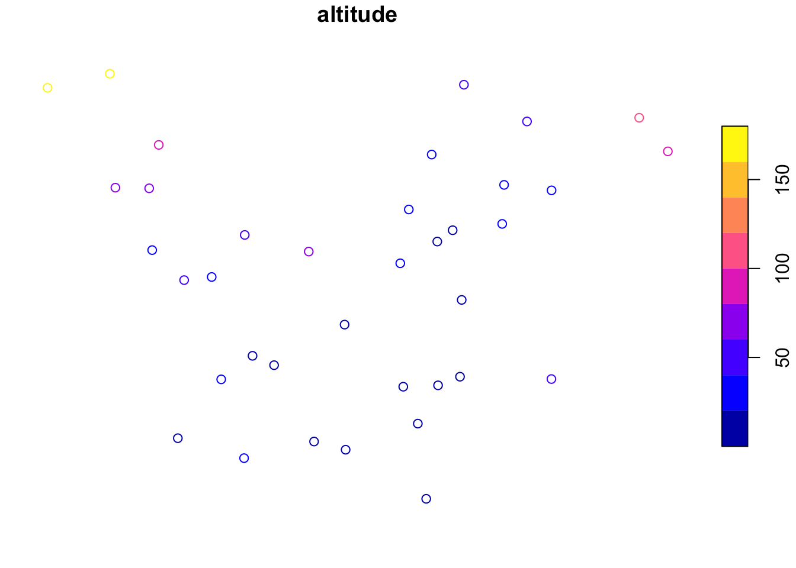
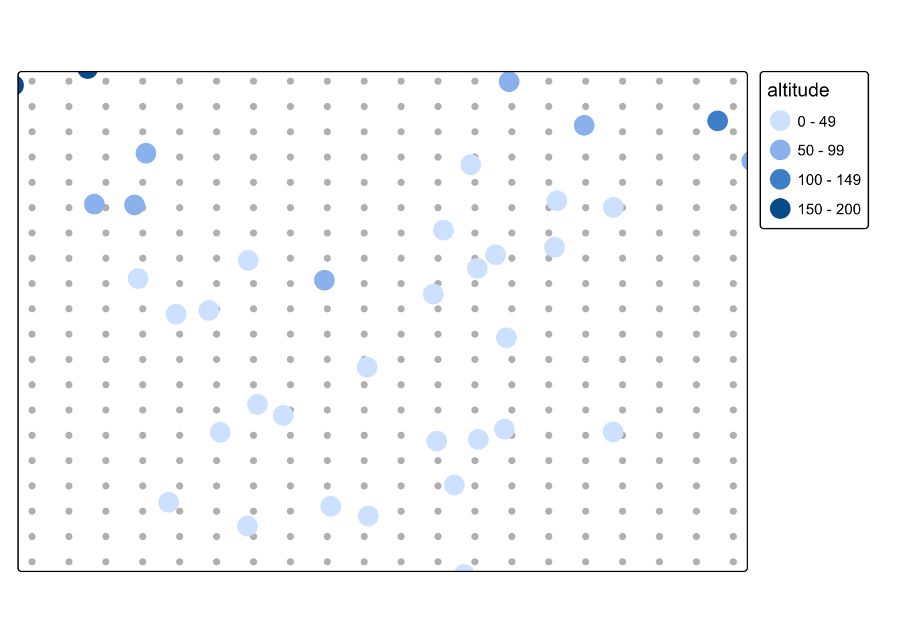
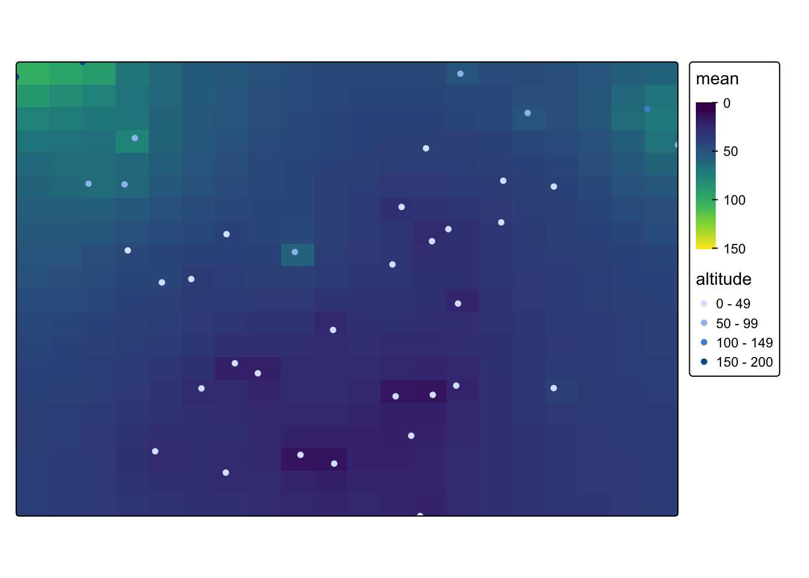

library(renv)
renv::load()
renv::restore() # Install missing librairies.
renv::status() # Check the project state.RIVERSEA: Preliminary explorations
0. Setup
Load dependencies.
library(zen4R)
library(here)Download data from Zenodo. The data file is relatively heavy (~800Mb), this operation can take a few minutes.
doi <- "10.5281/zenodo.17962542"
dest_dir <- here("data")if (!dir.exists(dest_dir)) dir.create(dest_dir, recursive = TRUE)
download_zenodo(doi, path = dest_dir)
unzip(here(dest_dir, "miste_data.zip"), exdir = dest_dir)If everything went well, the data should have been downloaded in data/zenodo/.
1. River data (La Vilaine)
First, we focus on the river geographic data. Let’s load it.
base::load(here(dest_dir, "zenodo", "processed_data", "reseaux_hydrographiques.rda"))For now, we will focus on the Vilaine bassin. We can view it using sfnetworks.
library(sf)
library(sfnetworks)
net <- as_sfnetwork(rht_vilaine)
plot(net, cex = 0.5)
Caution
We can see that the hydrographic network is not entirely connected. For example, a small portion in the south west is disconnected from the rest of the bassin. We should keep this in mind for later, as it could bias our statistical model.
We want to check that the network data is valid. In particular, we want to verify that there is no duplicate in the nodes, or edges data.
nodes <- net |>
activate("nodes") |>
st_as_sf()
sum(duplicated(nodes))[1] 0library(dplyr)
edges <- net |>
activate("edges") |>
st_as_sf()
sum(duplicated(select(edges, c("from", "to"))))[1] 0We see that there is no duplication for the Vilaine network. We can proceed to the next step.
2. Fish abundance data
2.1 Load data
base::load(here(dest_dir, "zenodo", "processed_data", "poissons_env_temp.RData"))
catches# A tibble: 69,823 × 6
sta_id pop_id ope_id annee esp_code_alternatif effectif
<int> <int> <int> <dbl> <chr> <int>
1 8530 31870 19943 2017 TRF 159
2 8530 31870 19943 2017 VAI 82
3 8530 31870 19944 2011 TRF 217
4 8530 31870 19944 2011 VAI 7
5 8530 31870 19945 2009 TRF 232
6 8530 31870 19945 2009 VAI 9
7 8530 31870 19946 2007 TRF 213
8 8530 31870 19946 2007 VAI 36
9 8530 31870 83029 2019 TRF 126
10 8530 31870 83029 2019 VAI 104
# ℹ 69,813 more rowsLet’s rename column for clarity.
catches <- catches |>
rename(
species = esp_code_alternatif,
year = annee,
abundance = effectif
)
species_names <- unique(catches$species)Next, let’s add zeros where species are not found.
library(tidyr)
catches <- catches |>
pivot_wider(
names_from = species,
values_from = abundance,
values_fill = list(abundance = 0)
) |>
pivot_longer(
cols = species_names,
names_to = "species",
values_to = "abundance"
)2.2. Preliminary plots
Let’s plot abundance histogram for each species. As most species abundance are dominated by zeros, because of absence data, we plot log(abundance + 1) instead of raw abundances. This also implies that we will need to use zero-inflated distributions in our statistical model to account for this absence data.
library(ggplot2)
catches |>
ggplot(aes(x = abundance + 1)) + # add 1 to avoid log(0)
geom_histogram(binwidth = 0.5) +
scale_x_log10() +
facet_wrap(~species)
Let’s plot abundance time series for the 10 most abundant species.
n_species <- 10
common_species <- catches |>
group_by(species) |>
summarise(mean_abundance = mean(abundance)) |>
arrange(desc(mean_abundance)) |>
slice(1:n_species) |>
pull(species)
catches |>
filter(species %in% common_species) |>
group_by(year, species) |>
summarise(mean_abundance = mean(abundance)) |>
ggplot(aes(x = year, y = mean_abundance, colour = species)) +
geom_line()
There is no clear trend, but we can’t say much at this point because trend may be masked by sampling efforts and environmental covariates.
2.3. Environmental data
Next, let’s focus on environmental variable that is available, so we can build a statistical model relating environment and fish abundances.
env <- env |> rename(year = annee)
data <- left_join(catches, env, by = c("sta_id", "pop_id", "year", "ope_id"))Station geographical coordinates are stored in points_geo_<river>. We visualize them over the hydrographic network.
plot(net, col = "black", cex = 0.5)
plot(points_geo_vilaine, col = "red", add = TRUE, pch = 16, cex = 0.5)
2.4. Eel and altitude
To begin with, let’s focus on a single species, Eel (ANG), and environmental variable, altitude (in meter).
env |>
group_by(sta_id) |>
summarise(alt_avg = mean(altitude)) |>
filter(is.na(alt_avg))# A tibble: 2 × 2
sta_id alt_avg
<int> <dbl>
1 8853 NA
2 13994 NAd <- inner_join(env, points_geo_vilaine) |>
select(c("pop_id", "altitude", "geometry")) |>
distinct()
plot(st_as_sf(d)[2])
library(terra)
library(tmap)
stations <- st_as_sf(d)
grid <- terra::rast(stations, nrows = 20, ncols = 20)
xy <- terra::xyFromCell(grid, 1:ncell(grid))
coop <- st_as_sf(as.data.frame(xy),
coords = c("x", "y"),
crs = st_crs(stations)
)
tm_shape(coop) + tm_dots(fill = "gray") +
tm_shape(st_as_sf(d)) + tm_dots("altitude", size = 1)
library(gstat)
res <- gstat(
formula = altitude ~ 1, locations = stations,
nmax = nrow(stations), set = list(idp = 1)
)
resp <- predict(res, coop)[inverse distance weighted interpolation]resp$x <- st_coordinates(resp)[, 1]
resp$y <- st_coordinates(resp)[, 2]
resp$pred <- resp$var1.pred
pred <- terra::rasterize(resp, grid, field = "pred", fun = "mean")
tm_shape(pred) +
tm_raster(col.scale = tm_scale_continuous(limits = c(0, 150), values = "viridis")) +
tm_shape(stations) +
tm_dots("altitude", col.scale = "viridis")
TODO: - Plot stations on top of hydrographic bassin. - Estimate missing values in environmental data. - Model fish abundances depending on environmental variables.